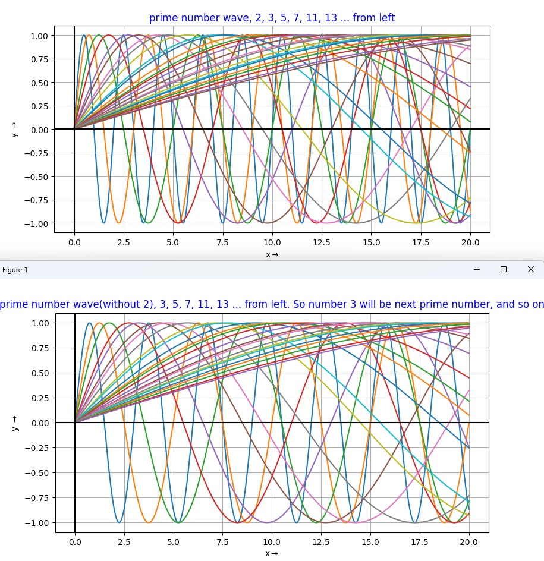

Accoriding to Wikipedia, A prime number (or a prime) is a natural number greater than 1 that is not a product of two smaller natural numbers.
Also, according to www.scientificamerican.com, there is no way to predict whether a given number will be prime.
However, I think that every prime number has its own frequency and phase as below picture. I believe a circle contains the frequency of natural number which is a prime number and composite number.
Therefore, if we remove the first number one by one, we may predict next number and when it will show up by demodulating it like wireless communication.
I am not a mathematician. Correct me if I'm wrong. btom02054@gmail.com
The first 25 prime numbers (all the prime numbers less than 100) are:
2, 3, 5, 7, 11, 13, 17, 19, 23, 29, 31, 37, 41, 43, 47, 53, 59, 61, 67, 71, 73, 79, 83, 89, 97...
